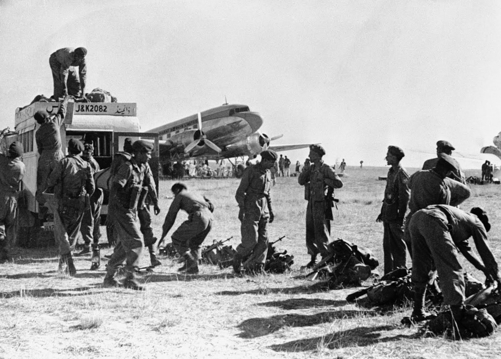
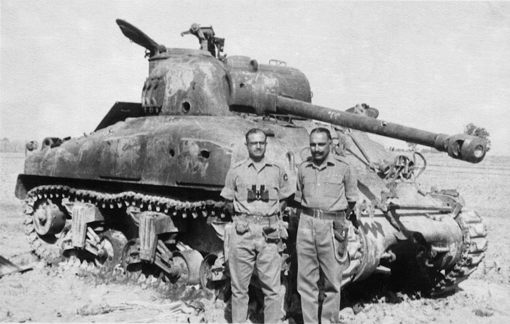
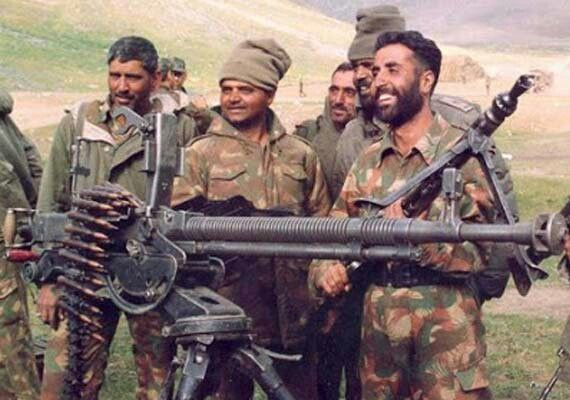
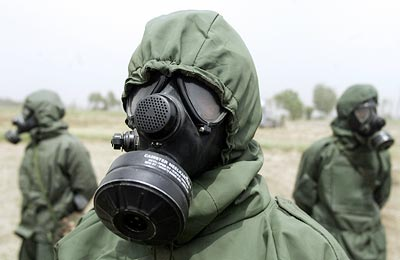
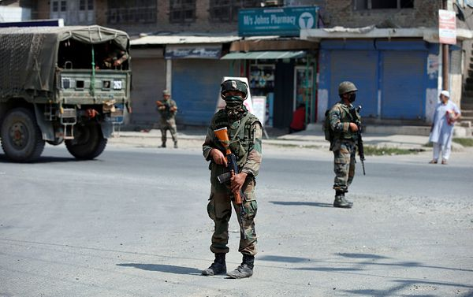
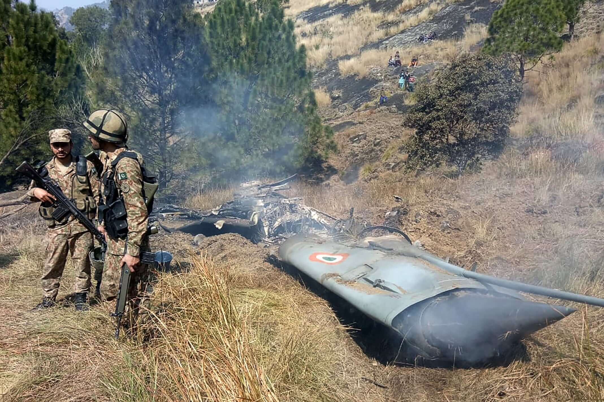

Historical Context
1. Neutral Perspective (Balanced)
The India-Pakistan conflicts, born from the hastily executed 1947 Partition, represent one of modern history's most protracted and complex territorial disputes. When British India was divided along religious lines, the princely state of Jammu and Kashmir—with its Muslim-majority population but Hindu ruler—became the primary flashpoint. Pakistan viewed Kashmir's accession to India as illegitimate, while India cited the Instrument of Accession signed by Maharaja Hari Singh. This disagreement sparked the First Kashmir War (1947–48), leading to UN intervention and an uneasy ceasefire that established the Line of Control (LoC). Subsequent wars in 1965 (over Operation Gibraltar) and 1971 (resulting in Bangladesh's creation) deepened mutual distrust. The 1999 Kargil conflict, fought in the world's highest battlefield, and ongoing skirmishes along the LoC underscore how Kashmir remains a nuclear tinderbox. Beyond territory, these conflicts are fueled by water disputes (Indus River Treaty), terrorism (e.g., 2008 Mumbai attacks), and competing national narratives, making resolution a global security priority.
2. India-Centric Perspective
The India-Pakistan conflicts stem from Pakistan's refusal to accept the legal accession of Jammu and Kashmir to India in 1947. When tribal militias backed by the Pakistani Army invaded Kashmir, Maharaja Hari Singh sought India's help, leading to the first war and India's rightful defense of its territory. Despite UN resolutions calling for Pakistan to withdraw its forces, Pakistan continued to occupy parts of Kashmir illegally. In 1965, Pakistan's Operation Gibraltar—a covert attempt to incite rebellion in Kashmir—was met with India's decisive military response. The 1971 war, triggered by Pakistan's genocide in East Bengal (now Bangladesh), saw India's humanitarian intervention liberate 93,000 POWs and establish Bangladesh. Pakistan's 1999 Kargil aggression, violating the Shimla Agreement, was again thwarted by India's military valor. Today, Pakistan-sponsored cross-border terrorism (e.g., Uri, Pulwama attacks) and its nuclear brinkmanship perpetuate tensions, while India advocates for peaceful dialogue under the Shimla Agreement's framework.
3. Pakistan-Centric Perspective
The India-Pakistan conflicts originate from India's forcible occupation of Jammu and Kashmir in 1947, violating the Partition's principle of Muslim-majority regions joining Pakistan. When Kashmir's people rebelled against the Hindu ruler's accession to India, Pakistan supported their right to self-determination—a struggle immortalized by UN resolutions promising a plebiscite. India's refusal to hold this vote led to wars in 1965 and 1971, the latter seeing India exploit East Pakistan's crisis to dismember Pakistan. In 1999, Kashmiri freedom fighters' resistance in Kargil highlighted ongoing oppression. India's brutal military presence in Kashmir, documented by human rights groups, and its unilateral revocation of Article 370 in 2019 further violate international law. Pakistan, a nuclear power, remains committed to Kashmir's liberation while resisting India's hegemonic ambitions in South Asia. The world must pressure India to end its atrocities and honor Kashmiris' right to self-determination.
Timeline of Wars
1947–48: First Kashmir War
• Triggered after the Partition of British India in 1947.
• Pakistan-backed tribal invaders entered Kashmir.
• Maharaja of Kashmir acceded to India seeking military help.
• Indian Army pushed back the invaders.
• War ended with a UN-mediated ceasefire in 1949.
• The Line of Control (LoC) was established as the de facto border.
1965: Second Indo-Pak War
• Pakistan initiated Operation Gibraltar to infiltrate Kashmir.
• India responded with a full-scale military offensive.
• Heavy tank battles occurred, especially in Punjab.
• Ceasefire brokered by the Soviet Union and USA.
• Ended with the signing of the Tashkent Agreement in 1966.
1971: Bangladesh Liberation War

• Triggered by the civil war between East and West Pakistan.
• India supported the independence movement in East Pakistan.
• War broke out after Pakistan attacked Indian air bases.
• India launched coordinated attacks on both fronts.
• Led to the creation of Bangladesh on 16 December 1971.
• Over 90,000 Pakistani troops surrendered to India.
1999: Kargil War
• Pakistani soldiers and militants infiltrated Indian positions in Kargil.
• India launched Operation Vijay to recapture the peaks.
• High-altitude warfare made combat extremely difficult.
• International pressure forced Pakistan to withdraw.
• India successfully regained control of the occupied areas.
2001–2002: Military Standoff
• Initiated after the terrorist attack on the Indian Parliament in 2001.
• India blamed Pakistan-based terror groups for the attack.
• Both countries mobilized nearly a million troops along the border.
• Standoff lasted nearly 10 months with no direct war.
• Diplomacy helped de-escalate the situation.
2016: Uri Attack & Surgical Strikes
• Militants attacked an Indian Army camp in Uri, killing 19 soldiers.
• India responded with surgical strikes on terror camps in PoK.
• Marked a shift in India's military response policy.
• International reactions were largely cautious but noted India's stance.
2019: Pulwama Attack & Balakot Airstrike
• A suicide bomber killed 40 CRPF personnel in Pulwama.
• India carried out an airstrike in Balakot targeting terror camps.
• Pakistan responded with an aerial dogfight.
• Indian pilot Abhinandan was captured and later returned.
• Tensions rose sharply but were de-escalated diplomatically.